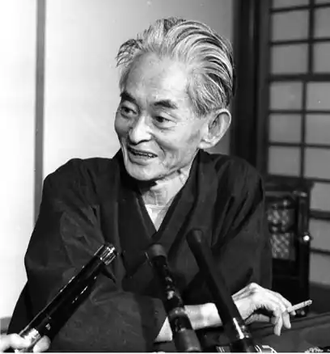
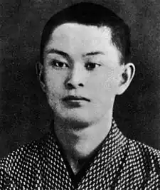

КАВАБАТА ЯСУНАРІ (11.06.1899, Осака — 16.04. 1972, Токіо) — японський письменник, лауреат Нобелівської премії 1968 р. Кабаята Ясунарі народився у сім'ї лікаря, людини високоосвіченої, залюбленої у літературу та мистецтво. Батьків Кабаята Ясунарі втратив рано і виховувався в родичів, спізнавши гіркий хліб сирітства. Навчаючись у 1910—1917 pp. у початковій і середній школах м. Осака, Кабаята Ясунарі зацікавився живописом та літературою, багато читав, віддаючи перевагу А. Стріндбергу, а з японських письменників — Акутагаві Рюноске та Міямото Юріко.
З 1920 по 1924 pp. Кабаята Ясунарі навчався у Токійському університеті на відділенні англійської, а згодом японської літератур. Тема його дипломної роботи — "Коротка історія японського роману". 1924 р. Кабаята Ясунарі разом із письменниками — "неосенсуалістами", до котрих належав і Йокоміцу Ріїті, автор програмного виступу "Про неосенсуалізм" (естетична концепція "неосенсуалістів" значною мірою спиралася на літературну теорію західних модерністів), заснував журнал "Літературна епоха" ("Бунґей Дзідай"), вів у ньому активну літературно-критичну діяльність, початок якій було покладено ще в студентські роки співпрацею у журналі "Дзідзі Сімпо".
Відтоді Кабаята Ясунарі у різні періоди свого життя брав участь в організації нових літературних журналів, був членом їхніх редакційних колегій; до 1939 р. регулярно публікував рецензії та огляди у провідному літературному журналі "Бунґей Сюндзю"; входив у склад журі різних літературних конкурсів і премій. Захоплення Кабаята Ясунарі неосенсуалізмом виявилося недовготривалим. Розпочате ним під явним впливом "Улісса" Дж. Джойса оповідання "Кристалічна фантазія" (1930) так і залишилося незавершеним.Першим значним твором Кабаята Ясунарі, який привернув увагу критики та читачів, була новела "Танцівниця з Ідзу" ("Ідзу-но одоріко", 1925), екранізована 1935 р. кінорежисером Госьо. Переживання закоханого юнака стали темою ліричної новели К. Я. Письменник психологічно тонко розкриває тендітну красу цього поетичного почуття. Постійним джерелом творчого натхнення Кабаята Ясунарі, за його власним зізнанням, слугувала "Повість про Гендзі" — найвидатніша пам'ятка середньовічної японської літератури. Письменника приваблюють шедеври національної класичної хейянської епохи (IX—XII ст.), що утверджують принципи розвитку вільної особистості, загальну гармонію. Починаючи з "Танцівниці з Ідзу", проявляється посутня грань таланту Кабаята Ясунарі: розкривати загальнолюдські, "стійкі вартості", спираючись у своїх художніх пошуках на естетику та національну самобутність класичної, народної японської літератури. Повість "Країна снігів" ("Юкіґуні", 1934— 1937) визнана літературними колами найпомітнішим явищем ліричної прози, найповніше виявила систему художнього мислення Кабаята Ясунарі. За образним висловлюванням М. Федоренка, "він ніби запрошує нас відкрити мушлю враження — і в ній відразу ж заблисне перлина істини". Книга складається з окремих ліричних оповідань, об'єднаних спільною тематикою: нерозділене людське кохання, краса природи північного краю Японії — країни снігів. У повоєнні роки, залишаючись вірним своїй колишній творчій манері, К. Я. написав низку творів, найзначніші з яких: повість "Тисяча журавлів" (1951), роман "Стогін гори" ("Яма-но ото", 1953).У центрі "Тисячі журавлів" — долі юнака Кікудзі та красуні Юкіко. Опис чайного церемоніалу — "тядо" — стародавнього звичаю японців, що прирівнюється до високого мистецтва, це й оповідне тло твору, і його ідея. "Зустріч за чаєм — та сама зустріч почуттів", — пише Кабаята Ясунарі. Прагнучи до об'ємності психологічної характеристики героїв, митець виявляє їхню естетичну причетність до чайного обряду. У дисгармонії з ним бездуховність, відсутність жіночності, емоційна глухість Тікао — одіозного персонажа повісті. Прекрасна, жіночна, граційна Юкіко, яка прямує до храму. Білосніжний журавель на її рожевому фуросікі — яскрава художня деталь, що свідчить, як пишуть критики, про авторське "звеличення" національної традиції. Журавель, що в японській символіці уособлює надію, добробут, у повісті Кабаята Ясунарі пророкує щасливе майбутнє героїні. У романі "Стогін гори" Кабаята Ясунарі на широкому тлі повоєнного побуту досліджує внутрішній світ, психологію своїх героїв: старого Сінго, службовця однієї із токійських фірм, та членів його родини. Пильна увага автора до складних сплетінь людських взаємин, до драматичних подій минулого і теперішнього переконує, що головним у творі є не стільки сюжет, скільки загальнолюдська тема. Естетичною її основою стає взаємозв'язок Людини, її поводження із законами буття та природи, який дедалі більше усвідомлюється Кабаята Ясунарі. Введенням образу гори ("...сад будинку Сінго був природним продовженням гори..."), стогін якої інколи вчувався головному героєві, автор підкреслює нерозривність, одухотвореність такого зв'язку. Прикметно, що цією ж думкою пронизані й новели Кабаята Ясунарі, написані у різні роки його творчості. 1950 р. Кабаята Ясунарі разом із членами ПЕН-клубу, головою якого він був з 1946 p., здійснив поїздки до Хіросіми та Нагасакі, місця атомних бомбардувань. Про своє бажання "вічного миру на землі" він розповість у новелах "Латочка", "Кораблики", "Камелія". Твори Кабаята Ясунарі вирізняються ускладненістю підтексту, ефектом недомовленості, несподіванки. Критика вбачає у цьому вплив на його художній досвід естетики дзен, "ґрунтованої на внутрішньому спогляданні". Проте в дослідженні психології людини, її відносин зі світом, природою Кабаята Ясунарі завжди орієнтувався на зв'язок з тією дійсністю, яку він хотів збагнути. 1968 p. Кабаята Ясунарі було присуджено Нобелівську премію за "письменницьку майстерність, яка з великим почуттям виражає суть японського способу мислення".Напружену працю над новим романом в останні роки життя Кабаята Ясунарі не вдалося завершити. Письменник важко хворів, заохотився до наркотиків. Будучи у стані важкої депресії після смерті свого учня і друга Юкіо Місіми, 16 квітня 1972 р. він наклав на себе руки у відлюдному курортному містечку Дзусі, що на околиці Токіо, отруївшись газом. Твори цього митця, що відобразили національне японське уявлення про світ, людину, красу, забезпечили йому славу за життя і безсмертя після смерті.В Україні окремі твори Кабаята Ясунарі переклали І. Дзюб, М. Федоришин. Л. Кибальчич